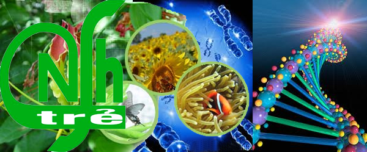

sơ lược về khoa công nghệ sinh học
giới thiệu chung
Khoa Công nghệ Sinh học (CNSH) Trường ĐH Mở TP.HCM được thành lập từ năm 1991 và cũng là Khoa
CNSH được thành lập đầu tiên ở phía Nam, có chức năng giảng dạy, giảng dạy kết hợp nghiên
cứu khoa học (NCKH). Chính vì vậy, bên cạnh chức năng đào tạo, giảng dạy, Khoa đã triển khai
các loại hình nghiên cứu cơ bản có định hướng ứng dụng và nghiên cứu ứng dụng một số sản
phẩm ngay từ những năm 1991 cho đến nay trên các lĩnh vực Công nghệ Sinh học Y dược,Công
nghệ Sinh học Nông nghiệp - Môi trường, Công nghệ Thực phẩm
Trong suốt quá trình hình thành, xây dựng và phát triển, Khoa luôn cải tiến chương trình
đào tạo nhằm đáp ứng kịp yêu cầu của xã hội. Hiện nay, Khoa đang triển khai đào tạo bậc
đại học Công nghệ Sinh học hệ đại trà, chất lượng cao, đào tạo từ xa với 3 chuyên ngành
chính Công nghệ Sinh học Y dược, Công nghệ Sinh học Nông nghiệp - Môi trường, Công nghệ
Thực phẩm. Bên cạnh đó, Khoa đã tổ chức đào tạo bậc Thạc sĩ Ngành Công nghệ Sinh học từ
năm 2018.
Phương thức tuyển sinh
Trường Đại học Mở Thành phố Hồ Chí Minh thực hiện 03 phương thức xét tuyển:
Phương thức 1: Xét tuyển dựa trên kết quả của kỳ thi THPT Quốc gia năm 2020.
Phương thức 2: Xét tuyển theo kết quả học tập các môn học ở THPT 3 năm lớp 10, 11 và 12 (HỌC BẠ).
Điểm nhận hồ sơ từ 20.0 điểm.
Phương thức 3: Xét tuyển dựa trên bài thi tú tài quốc tế (IB): điểm nhận hồ sơ xét tuyển từ 26 điểm.
tuyển sinh(2019)
Khối xét tuyển và ngành xét tuyển
- Toán, Lý, Hóa
- Toán, Lý, Anh
- Toán, Hóa, Anh
- Toán, Văn, Anh
- Công nghệ sinh học Thực phẩm
- Công nghệ sinh học nông nghiệp - Môi trường
- Công nghệ sinh học Y-Dược